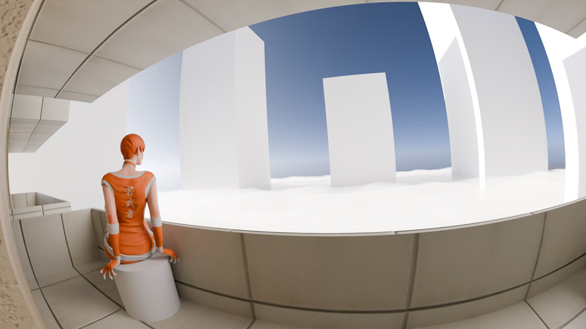
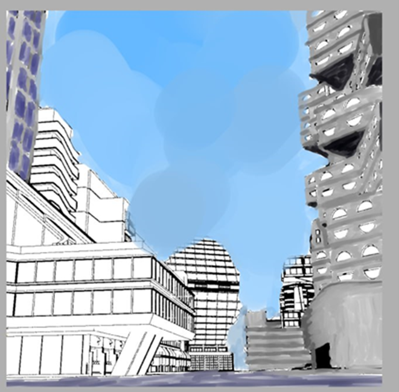
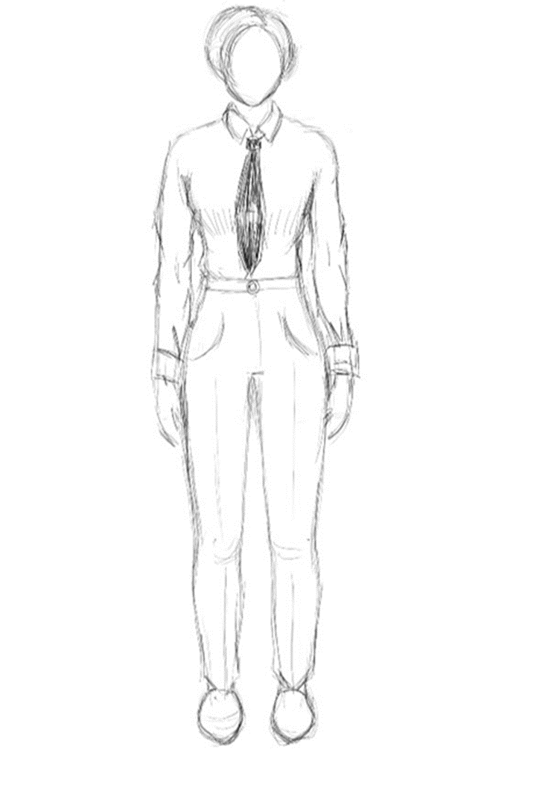
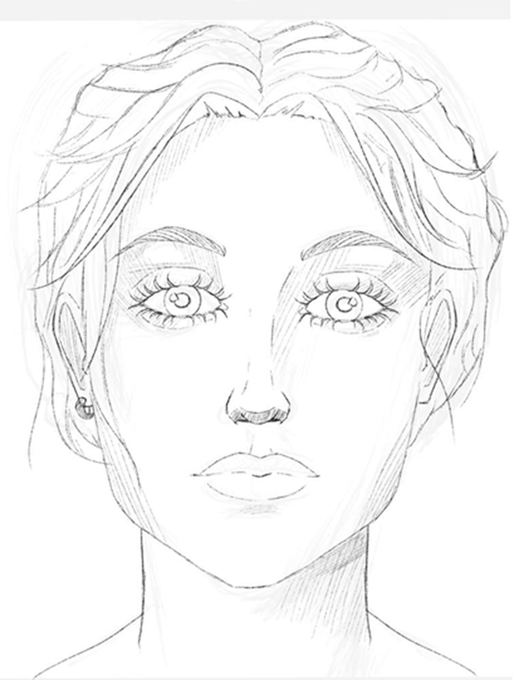
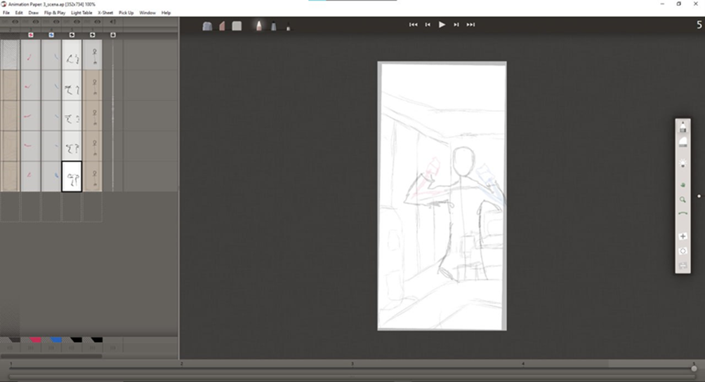
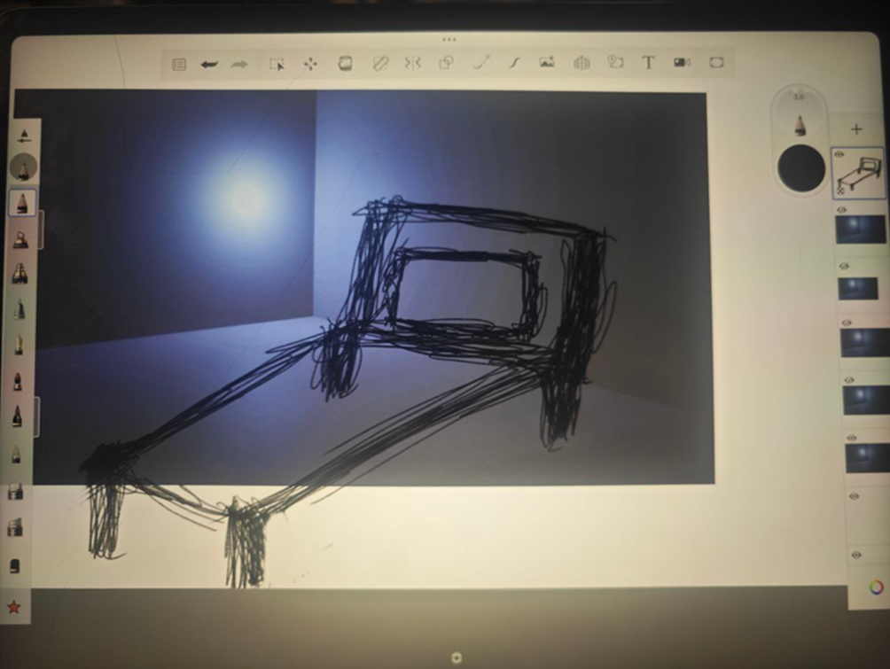

Журнал проекта
Этапы работы
- Создан концепт вселенной
- Написан сценарий для мультсериала
- Детально проработан сценарий для пилотной серии
- Написаны заготовки биографий главных персонажей
- Запущена новая рубрика в группе ВК и обновлены старые
- Создана группа в Телеграм
- Продуман образ главных персонажей
- Подготовлены 3D локации для будущих сцен
- Пересмотрена организация труда в коллективе
- Заложена база для развития мира и создания звукового сопровождения
- Завершена раскадровка первой серии
- Начата работа над анимацией
Галерея






Интересно знать больше?
Подписывайся на наши соцсети, где мы выкладываем оригинальный контент: концепт-арты, этапы работы, раскадровки и многое другое!